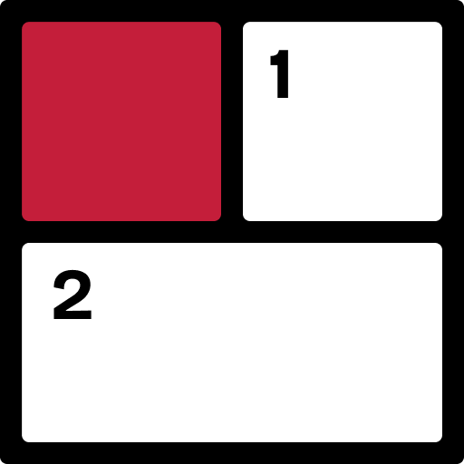

Shikaku
A grid-splitting puzzle. Divide the grid into rectangles that match the numbers inside them.
How to play
- Divide the whole grid into rectangles. Squares count as rectangles too.
- Every rectangle contains exactly one number.
- That number is the rectangle’s area: how many cells it covers.